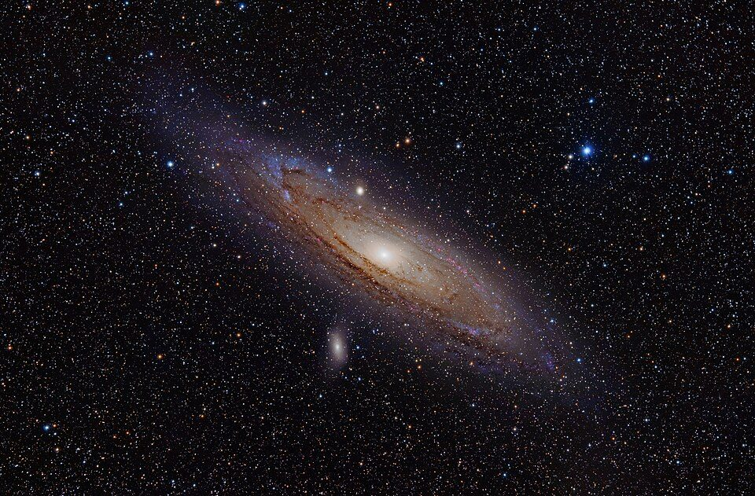

Andromeda and the Local Group
Our neighbour Andromeda, the Magellanic Clouds and the more than 80 galaxies of the Local Group. And a collision foretold.

.jpg){kind=link}
The Milky Way is not alone. It belongs to the Local Group, a set of more than 80 galaxies spread over some 10 million light years. Almost all are small dwarf galaxies; there are only three big ones: Andromeda, the Milky Way and the Triangulum galaxy.
Andromeda, our big neighbour
The Andromeda galaxy (M31) is a spiral somewhat larger than ours, with about a trillion stars, 2.5 million light years away. It is the most distant object visible to the naked eye: from a dark site in autumn it appears as an elongated smudge in the constellation Andromeda. It covers about six times the width of the full Moon in the sky, although the naked eye only picks out its bright centre.
The night the universe became enormous
In 1923 Edwin Hubble photographed Andromeda with the 2.5-metre telescope on Mount Wilson (California) and found a Cepheid star in it, a type of star whose true brightness is known. Comparing that with how faint it looked, he worked out that it was far beyond any star in the Milky Way. Andromeda was not a nebula in our galaxy but another galaxy. Suddenly the universe went from one galaxy to millions of them.
The coming collision
Andromeda and the Milky Way are approaching each other at about 110 km/s. For decades it was taken for granted that they would collide in about 4.5 billion years. A 2025 study using Gaia and Hubble data lowered the probability to roughly even odds over the next 10 billion years: it depends heavily on the pull of other galaxies in the group. If it happens, stars would hardly ever hit each other, because they are so far apart, but the two spirals would end up merged into one large elliptical galaxy, nicknamed Milkomeda.
The Magellanic Clouds
The Large Magellanic Cloud, 160,000 light years away, and the Small Magellanic Cloud, 200,000, are two dwarf galaxies accompanying the Milky Way. From the southern hemisphere they are visible to the naked eye as two detached wisps of the Milky Way. The Large Cloud holds the Tarantula Nebula, the most active star-forming region in the Local Group, and it was there that the 1987 supernova exploded.
The galaxies around us
- Triangulum galaxy (M33): the group's third large galaxy, 2.7 million light years away, visible to the naked eye only under exceptional skies.
- Sagittarius dwarf galaxy: being torn apart by the Milky Way's gravity, its stars form a stream that wraps around our galaxy.
- Dozens of very faint dwarf galaxies, some with only a few thousand stars, discovered in recent years.